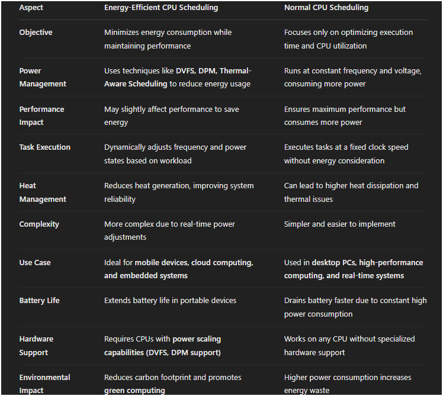
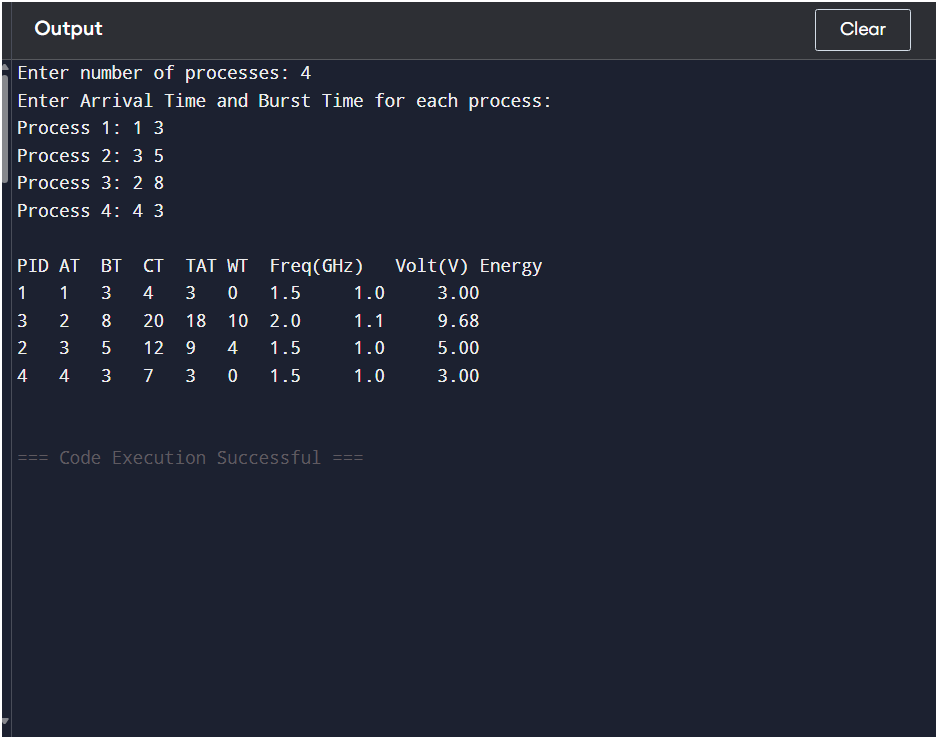
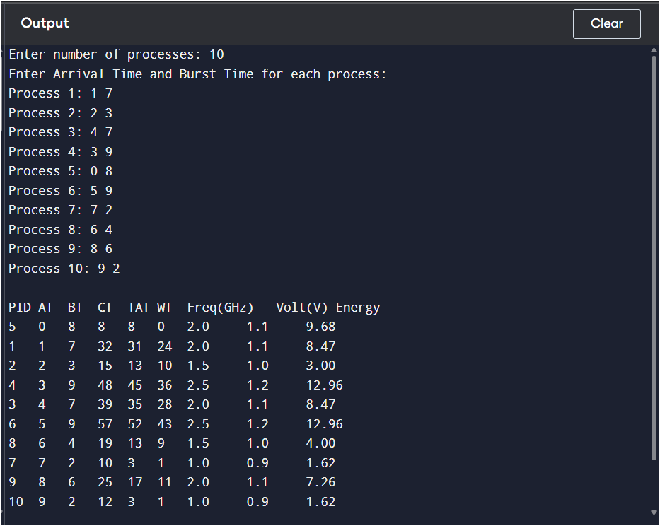

Description: Develop a CPU scheduling algorithm that minimizes energy consumption without compromising performance. The algorithm should be suitable for mobile and embedded systems where power efficiency is critical.
An E-E Scheduling Algorithm is a scheduling strategy that tries to maximize energy efficiency and minimize the energy cost of processing the data. The approach uses the DVFS techniques which vary the voltage and frequency of a system component. When combined with scheduling policies like Shortest Job First, Round Robin, or Priority Scheduling, power constraints can be met without sacrificing performance which results in less energy being consumed. This makes it useful for mobile phones, embedded systems, and any other low power devices.
1. Reduced Power Consumption: Minimizes energy usage by dynamically adjusting CPU resources, lowering overall power costs.
2. Extended Battery Life: Enhances battery performance in mobile and embedded devices by optimizing energy use.
3. Lower Heat Generation: Reduces CPU temperature, preventing thermal hotspots and lowering cooling requirements.
4. Improved System Reliability: Prevents overheating, which extends hardware lifespan and reduces failure rates.
5. Optimized Performance: Balances energy efficiency with task execution to maintain system responsiveness.
6. Environmental Benefits: Lowers carbon footprint by reducing energy wastage in large-scale computing environments.
7. Cost Savings: Decreases electricity bills in data centers and cloud computing systems by minimizing energy-intensive operations.
8. Better Resource Utilization: Efficiently manages CPU cores, reducing idle power consumption while maintaining workload efficiency.
9. Scalability: Adapts to various system architectures, from embedded processors to large multi-core servers.
10. Supports Green Computing: Contributes to sustainable computing by promoting energy-conscious resource allocation strategies.
1. Increased Scheduling Complexity: Implementing energy-aware scheduling requires sophisticated algorithms, making the system more complex.
2. Performance Trade-offs: Reducing power consumption may lead to lower processing speeds, increasing execution time for tasks.
3. Overhead in Dynamic Adjustments: Techniques like DVFS and DPM introduce overhead due to frequent changes in CPU frequency and power states.
4. Compatibility Issues: Some energy-efficient scheduling techniques may not be fully supported by all hardware and operating systems.
5. Unpredictable Execution Time: Adapting to energy constraints can make task execution times less predictable, which is problematic for real-time applications.
6. Risk of Thermal Imbalance: Poor scheduling decisions can lead to thermal hotspots, potentially reducing system efficiency.
7. Resource Starvation: Tasks with lower energy demands may be favored over high-energy tasks, leading to unfair CPU allocation.
8. Initial Implementation Cost: Integrating energy-efficient scheduling into existing systems may require additional hardware or software modifications.
9. Limited Benefit in Low-Load Scenarios: Energy savings are more significant in high-load situations; under low utilization, the impact may be minimal.
10. Complex Monitoring and Management: Requires continuous monitoring of energy usage, workload distribution, and performance to ensure efficiency.
1. Dynamic Voltage and Frequency Scaling (DVFS) Scheduling.
2. Dynamic Power Management (DPM) Scheduling.
3. Thermal-Aware Scheduling.
4. Deadline-Aware Energy Scheduling.
5. Task Consolidation Scheduling.
6. Energy-Aware Fair Scheduling.
7. Machine Learning-Based Energy Scheduling.
Dynamic Voltage and Frequency Scaling (DVFS) is a power management technique that adjusts a processor’s clock frequency and operating voltage dynamically based on workload demands to optimize energy efficiency. By lowering the frequency and voltage during low computational loads, DVFS reduces power consumption and heat generation, extending battery life in mobile devices and improving thermal management in high-performance computing systems. Conversely, when higher performance is required, the frequency and voltage are increased to maintain processing speed. Since power consumption is proportional to the square of the voltage (P ∝ V²f), DVFS significantly reduces energy usage while balancing performance needs. It is widely used in embedded systems, cloud computing, and real-time applications, where energy efficiency and performance trade-offs are crucial.
Dynamic Power Management (DPM) is an energy-saving technique that optimizes power consumption by selectively turning off or reducing the power state of system components when they are idle or underutilized. Unlike Dynamic Voltage and Frequency Scaling (DVFS), which adjusts CPU voltage and frequency, DPM focuses on switching components between different power states, such as sleep, standby, or active modes, based on workload requirements. It is widely used in battery-operated devices, data centers, and embedded systems to extend battery life and reduce overall energy consumption. DPM is implemented using hardware-based power gating, software-controlled sleep states, and adaptive scheduling policies that predict idle periods and manage power transitions efficiently.
Thermal-Aware Scheduling is a CPU scheduling technique that manages workload distribution to prevent overheating and reduce energy consumption. Instead of solely focusing on performance, this approach considers temperature constraints and dynamically adjusts task execution across CPU cores to balance thermal output. It helps in avoiding thermal hotspots, which can degrade hardware reliability and increase cooling costs, especially in high-performance computing systems, data centers, and embedded devices. Techniques such as task migration, dynamic voltage and frequency scaling (DVFS), and workload throttling are commonly used to maintain an optimal thermal profile. By effectively distributing heat generation, thermal-aware scheduling enhances system stability, prolongs hardware lifespan, and minimizes the need for aggressive cooling mechanisms.
Deadline-Aware Energy Scheduling is a power management technique that balances energy efficiency and task deadlines by dynamically adjusting CPU performance based on workload urgency. It ensures that tasks meet their deadlines while minimizing energy consumption using methods like Dynamic Voltage and Frequency Scaling (DVFS), Dynamic Power Management (DPM), and task scheduling strategies. This approach is particularly useful in real-time systems, embedded devices, and cloud computing, where energy efficiency is crucial but missing deadlines can lead to system failures. By prioritizing tasks with stricter deadlines and scaling CPU resources accordingly, deadline-aware scheduling optimizes power usage without compromising system responsiveness or reliability.
Task Consolidation Scheduling is an energy-efficient scheduling technique that reduces power consumption by grouping tasks onto a minimal number of active processing units while turning off or putting idle cores into low-power states. This approach is widely used in multi-core processors, cloud computing, and data centers, where reducing the number of active cores can significantly lower energy usage. By consolidating tasks efficiently, it minimizes unnecessary power wastage while ensuring workload balance and system performance. Techniques such as Dynamic Voltage and Frequency Scaling (DVFS), workload migration, and heuristic-based scheduling are often combined with task consolidation to achieve optimal energy savings. However, improper consolidation can lead to thermal hotspots and performance bottlenecks, making intelligent task placement crucial for maintaining system efficiency.
Energy-Aware Fair Scheduling is a CPU scheduling technique that balances energy efficiency and fair resource allocation among processes. It ensures that each task gets a fair share of CPU time while dynamically adjusting power consumption using techniques like Dynamic Voltage and Frequency Scaling (DVFS), workload balancing, and power-aware task prioritization. This approach is particularly useful in multi-core systems, cloud computing, and real-time environments, where both performance and energy conservation are critical. By considering factors like task priority, execution deadlines, and energy budgets, Energy-Aware Fair Scheduling optimizes power usage while preventing resource starvation. It helps in extending battery life, reducing thermal stress, and improving overall system efficiency without disproportionately favoring high-priority or energy-intensive tasks.
Machine Learning-Based Energy Scheduling is an advanced approach that leverages machine learning algorithms to optimize CPU scheduling for energy efficiency and performance. Unlike traditional methods, this approach predicts workload patterns, CPU utilization, and power consumption trends to make intelligent scheduling decisions. Techniques such as reinforcement learning, neural networks, and decision trees are commonly used to dynamically adjust CPU frequency, voltage, and task allocation. It is widely applied in data centers, mobile devices, and cloud computing environments, where reducing power consumption without compromising performance is critical. By continuously learning from past executions and adapting to real-time system conditions, machine learning-based scheduling enhances energy savings, prolongs battery life, and improves overall system efficiency while ensuring tasks meet their deadlines.

Comprehensive C implementation of Dynamic Voltage and Frequency Scaling (DVFS) CPU Scheduling using Shortest Remaining Time First (SRTF) to optimize both energy efficiency and performance.
#include <stdio.h>
#include <stdlib.h>
#include <math.h>
#define MAX_PROCESSES 10
// Frequency and voltage levels (simulated values)
float frequencies[] = {1.0, 1.5, 2.0, 2.5}; // GHz
float voltages[] = {0.9, 1.0, 1.1, 1.2}; // Volts
int num_levels = 4;
typedef struct {
int pid;
int arrival_time;
int burst_time;
int remaining_time;
int completion_time;
int waiting_time;
int turnaround_time;
float energy_consumed;
float frequency;
float voltage;
} Process;
void swap(Process *a, Process *b) {
Process temp = *a;
*a = *b;
*b = temp;
}
void sort_by_arrival(Process processes[], int n) {
for (int i = 0; i < n - 1; i++) {
for (int j = 0; j < n - i - 1; j++) {
if (processes[j].arrival_time > processes[j + 1].arrival_time) {
swap(&processes[j], &processes[j + 1]);
}
}
}
}
// Select frequency & voltage level based on remaining workload and burst characteristics
void adjust_dvfs(Process *p) {
int level = 0;
if (p->remaining_time > 8) level = 3;
else if (p->remaining_time > 5) level = 2;
else if (p->remaining_time > 2) level = 1;
p->frequency = frequencies[level];
p->voltage = voltages[level];
}
void dvfs_scheduling(Process processes[], int n) {
int time = 0, completed = 0;
while (completed < n) {
int min_index = -1;
int min_burst = __INT_MAX__;
for (int i = 0; i < n; i++) {
if (processes[i].arrival_time <= time && processes[i].remaining_time > 0) {
if (processes[i].remaining_time < min_burst) {
min_burst = processes[i].remaining_time;
min_index = i;
}
}
}
if (min_index == -1) {
// If no process is available, move time to the next arrival time
int next_arrival = __INT_MAX__;
for (int i = 0; i < n; i++) {
if (processes[i].remaining_time > 0 && processes[i].arrival_time > time) {
next_arrival = (processes[i].arrival_time < next_arrival) ? processes[i].arrival_time : next_arrival;
}
}
time = next_arrival;
continue;
}
adjust_dvfs(&processes[min_index]);
int exec_time = processes[min_index].remaining_time;
processes[min_index].remaining_time = 0;
time += exec_time;
processes[min_index].completion_time = time;
processes[min_index].turnaround_time = processes[min_index].completion_time - processes[min_index].arrival_time;
processes[min_index].waiting_time = processes[min_index].turnaround_time - processes[min_index].burst_time;
processes[min_index].energy_consumed = pow(processes[min_index].voltage, 2) * exec_time; // Power ~ V^2 * t
completed++;
}
}
void display_metrics(Process processes[], int n) {
printf("\nPID\tAT\tBT\tCT\tTAT\tWT\tFreq(GHz)\tVolt(V)\tEnergy\n");
for (int i = 0; i < n; i++) {
printf("%d\t%d\t%d\t%d\t%d\t%d\t%.1f\t\t%.1f\t\t%.2f\n", processes[i].pid, processes[i].arrival_time, processes[i].burst_time,
processes[i].completion_time, processes[i].turnaround_time, processes[i].waiting_time,
processes[i].frequency, processes[i].voltage, processes[i].energy_consumed);
}
}
int main() {
int n;
Process processes[MAX_PROCESSES];
printf("Enter number of processes: ");
scanf("%d", &n);
printf("Enter Arrival Time and Burst Time for each process:\n");
for (int i = 0; i < n; i++) {
processes[i].pid = i + 1;
printf("Process %d: ", i + 1);
scanf("%d %d", &processes[i].arrival_time, &processes[i].burst_time);
processes[i].remaining_time = processes[i].burst_time;
}
sort_by_arrival(processes, n);
dvfs_scheduling(processes, n);
display_metrics(processes, n);
return 0;
}
//Developed By - Manas Patel//
This algorithm uses a Dynamic Voltage and Frequency Scaling (DVFS) based Shortest Remaining Time First (SRTF) scheduling to maximize the energy saving while maintaining effective CPU scheduling. The technique utilized here is a preemptive scheduling scheme in which the process with the smallest remaining burst time is always chosen for execution. Besides, DVFS is incorporated by dynamically varying the CPU frequency and voltage based on the remaining process execution time.
The algorithm starts with sorting processes by their arrival times so that they are scheduled in the proper order. It proceeds with a Shortest Remaining Time First (SRTF) scheduling policy, where the process with the smallest remaining execution time is chosen at every step. Prior to executing a process, the algorithm uses Dynamic Voltage and Frequency Scaling (DVFS) to optimize energy consumption by changing the CPU frequency and voltage. Increased workloads demand quicker processing and hence run at increased frequencies and voltage, whereas lower workloads utilize lesser frequency and voltage in order to save power. The power utilization is determined by the formula Energy = V² × Time, where power usage is directly proportional to the square of voltage. Decreasing voltage minimizes overall energy consumption significantly. After a process finishes, important performance parameters like turnaround time, waiting time, and completion time are measured to measure scheduling effectiveness.
1. Energy Efficiency: Dynamically reducing voltage and frequency, the algorithm reduces power consumption without considerable performance loss.
2. Improved Performance: The SRTF policy guarantees shorter tasks are executed in a timely manner, minimizing total waiting time.
3. Suitable for Mobile and Embedded Systems: This approach is especially beneficial for battery-powered devices where energy efficiency is essential.
4. CPU Utilization Optimized: Guarantees efficient use of CPU resources without wasted idle time.
This method is greatly advantageous in real-time and embedded systems where performance and energy efficiency are very important considerations.
1. Rather than employing fixed scheduling, this method adjusts CPU voltage and frequency levels dynamically in accordance with the remaining execution time.
2. It embeds energy optimization as part of the scheduling process, while existing DVFS methods tend to be used independently of scheduling.
3. It is less complex than most current energy-efficient schedulers and hence easier to integrate into operating systems for resource-limited environments (e.g., mobile devices).


Lead Developer
Developer
Developer